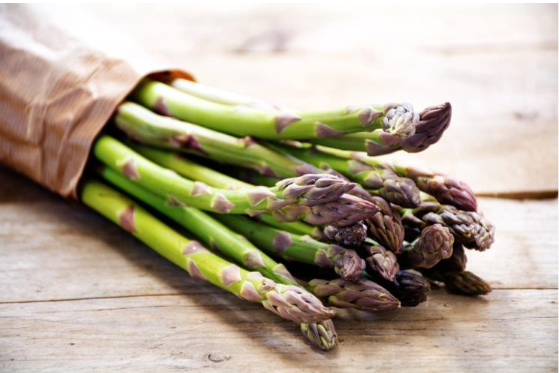
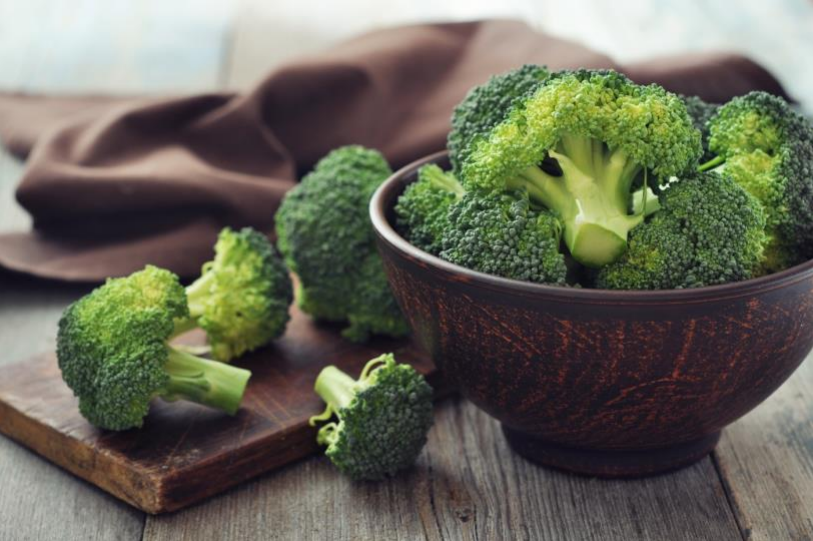
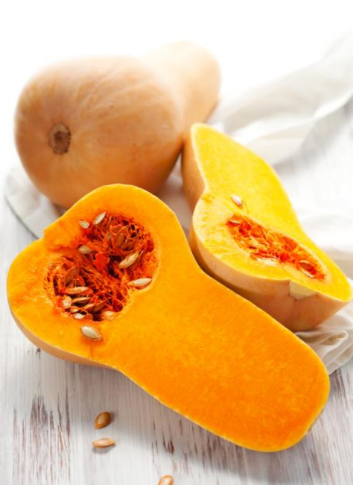
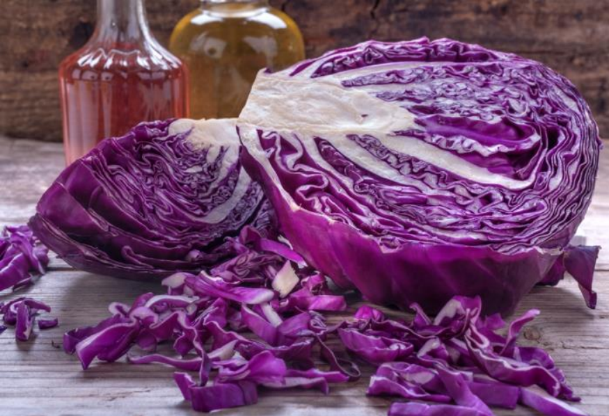
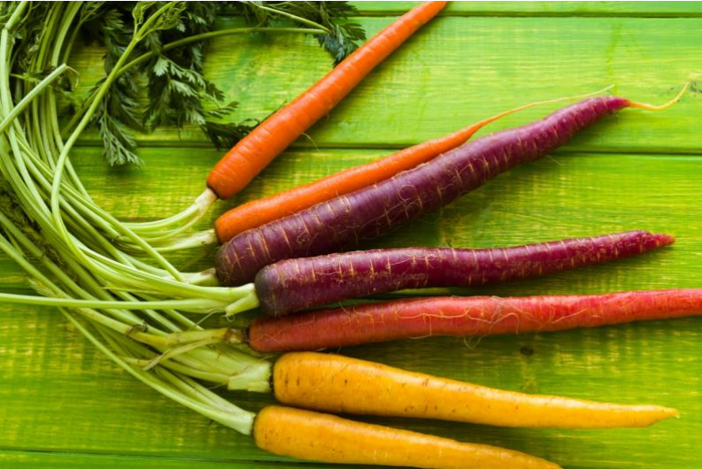
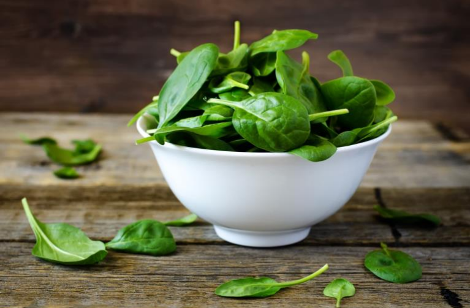

Healthy recipes for peak athletic performance
Henry Twill and Jill Bayner, CNS
| Recipe | Main Ingredients | Health Highlights | Yields |
|---|---|---|---|
| Asparagus and Apple Mixed Greens | Asparagus, mixed greens, apple, vinaigrette | High in folate, potassium, and antioxidants | 8 servings |
| Roasted Broccoli with Garlic and Red Pepper | Broccoli, garlic, red pepper, olive oil | Rich in vitamin C and anti-cancer compounds | 4–6 servings |
| Farmhouse Butternut Squash Soup | Butternut squash, carrots, apple, broth | High in fiber, vitamins A, C, and E | 6–8 servings |
| Lady’s Cabbage | Cabbage, milk, eggs, butter | Rich in vitamin C and anti-inflammatory compounds | 4 servings |
| Cider-Glazed Spiced Carrots | Carrots, apple cider, cinnamon, nutmeg | High in beta-carotene and vitamin A | 8 servings |
| Marinated Eggplant | Eggplant, vinegar, garlic, oregano, olive oil | Source of folic acid and potassium | 12 servings |
| Vegan Norwegian Spinach Soup | Spinach, tofu, vegetable bouillon | Rich in iron, folate, and antioxidants | 4–6 servings |
Cooking with Asparagus
Asparagus is a low-calorie source of folate and potassium, and its stalks are high in antioxidants. Asparagus is high in roughly half the recommended daily intake of folate, a key nutrient in taming homocysteine, a substance implicated in heart disease, and is also high in potassium. Several studies indicate getting plenty of potassium may reduce the loss of calcium from the body. In addition, green asparagus is a good source of vitamin C, which helps the body produce and maintain collagen, the major structural protein component of the body's connective tissues. As if that weren’t enough, asparagus also contains substances that act as a diuretic, neutralize ammonia that causes fatigue, and protect small blood vessels from rupturing.
Asparagus and Apple Mixed Greens
[Adapted from a recipe by Anne Graziano, that appeared in Bon Appétit, June 2000 issue]
Ingredients:
- 24 thin asparagus stalks
- 1 tablespoon plus 1/3 cup olive oil or grape seed oil
- (1/4) cup rice vinegar or balsamic vinegar
- 2 tablespoons honey
- 1 garlic clove, minced
- 10-ounces mixed baby greens
- 1 Golden Delicious apple, quartered, cored, diced
Directions:
- Preheat oven to 400°F. and trim ends of asparagus stalks in preparation.
- Place asparagus on baking sheet, with no overlap.
- Drizzle lightly with 1 tablespoon olive or grape-seed oil, then sprinkle with salt and pepper, and rosemary.
- Roast 30 minutes, turning once, and then remove from oven.
- While asparagus cools for 5 minutes, blend together remaining oil, vinegar, honey and garlic in small bowl.
- Place greens in large bowl and toss with vinaigrette from small bowl.
- Spoon small heap of salad on each of 8 plates, top with diced apple.
- Finally, arrange asparagus attractively on top and serve chilled.
Yields 8 servings.
Cooking with Broccoli
Broccoli is high in vitamin C and dietary fiber, and contains multiple nutrients, including diindolylmethane and selenium, that have been shown to exhibit potent anti-cancer properties. Broccoli is also particularly rich in lutein, carotenoids, and beta-carotene. A high intake of broccoli has even been found to reduce the risk of aggressive prostate cancer in several studies. Broccoli consumption has also been shown to be beneficial in the prevention of heart disease. However, the benefits of broccoli are greatly reduced if boiled, so to maintain the health benefits of this cruciferous vegetable, it's best to eat it raw or roasted, as prepared below
Roasted Broccoli with Garlic and Red Pepper
[Adapted from a recipe by Black Bottle in Seattle Washington, that appeared in Bon Appétit, January 2009 issue]
Ingredients:
- 1 ¼ pounds broccoli crowns
- 3 ½ tablespoons olive oil, divided
- 2 garlic cloves, minced
- Large pinch of dried crushed red pepper
Directions:
- Preheat oven to 450°F and cut broccoli into florets, making about 8 cups.
- Toss broccoli and 3 tablespoons oil in large bowl until well-coated.
- Sprinkle with salt and pepper and transfer to rimmed baking sheet.
- While broccoli roasts for approximately 15 minutes, mix remaining oil with garlic and red pepper in small bowl.
- Drizzle garlic mixture over broccoli and toss to spread mixture evenly.
- Roast until broccoli just begins to brown - about 8 minutes longer.
- Season to taste with salt and pepper and serve while still piping hot.
Yields 4 to 6 servings.
Cooking with Butternut Squash
Butternut squash is not a vegetable - but a versatile fruit that can be toasted and roasted, and also puréed to make soup, or mashed into casseroles, breads, and muffins. Grilled butternut can be seasoned with spices such as nutmeg and cinnamon, or the center can be de-seeded and stuffed with other vegetables, before being wrapped in foil and grilled. Butternut squash is a great source of fiber, vitamin C, manganese, magnesium, vitamin A, and vitamin E.
Farmhouse Butternut Squash Soup
[Adapted from a recipe by Ian Knauer, that appeared in Gourmet, February 2009 issue.]
Ingredients:
- 4 real or soy bacon slices
- 4 large garlic cloves, chopped
- 2 large shallots
- 1 teaspoon caraway seeds
- 2 pounds butternut squash, peeled, seeded, and chopped
- ½ pound carrots, chopped
- 1 Granny Smith apple, peeled, cored, and chopped
- 2 teaspoons ginger or 5 shredded, dry ginger
- 1 teaspoon cinnamon or 2 cinnamon springs
- 3 thyme sprigs
- 1 California bay leaf
- 3 ½ cups reduced-sodium chicken broth or vegetable broth
- 2 cups water
- 1 to 1 ½ teaspoons cider vinegar
Directions:
- Cook bacon until crisp, then place on paper towels to drain grease.
- Lightly sauté garlic and shallots in olive oil and set aside briefly
- Place squash, carrots, apple, thyme, bay leaves, ginger, cinnamon, broth, water, in a large pot and boil, uncovered, until vegetables are tender, for about 20 minutes. Add sautéed garlic and shallots to the pot during the last 5 minutes.
- Discard thyme and bay leaves.
- Purée the soup, in appropriately sized batches in a blender, until the mix is smooth - taking special care when blending hot liquids.
- Return the purée to the large pot and season with salt, pepper, and vinegar. Serve topped with crumbled bacon or soy bacon.
Yields 6-8 servings.
Cooking with Cabbage
Cabbage is a wonderfully nutritious vegetable, often touted as a preventative for cancer because it contains indole-3-carbinol, a chemical that boosts DNA repair in cells and appears to block the growth of cancer cells. Cabbage is also an excellent source of vitamin C and contains significant amounts of glutamine, an amino acid that has anti-inflammatory properties. Cabbage is a good choice for dieting programs, as it is a low calorie food. There are lots of varieties of cabbage including, but not limited to, drumhead, Savoy, winter, red and white. Red cabbage is often used for coleslaw, or in salads, and white cabbage is often used in traditional German sauerkraut
Lady's Cabbage
[Lady's Cabbage is an English recipe that has the appearance of cauliflower, and is very tasty and extremely easy to make.]
Ingredients:
- 1 head of white cabbage
- 3 tablespoons milk or cream
- 2 eggs
- 1 tablespoon butter
- Salt and pepper to taste
Directions:
- Boil a firm white cabbage approximately fifteen minutes until tender, then drain and set aside until perfectly cold.
- Chop fine and add two beaten eggs, a tablespoonful of butter, pepper, salt, and three tablespoons of rich milk or cream.
- Stir all well together, and bake in a buttered pudding-dish until brown. Serve piping hot.
Yields 4 servings.
Cooking with Carrots
Carrots are one of the most popular and favored vegetables, and are probably one of the most versatile, as well, as they can be prepared both raw and cooked, imparting a fresh flavor to many recipes. The carrot gets its characteristic bright orange color from B-carotene, which is metabolized into vitamin A when digested. Only 3% of the B-carotene in raw carrots is released during digestion - but this can be improved to substantially by pulping, cooking and adding cooking oil. Urban legend says that carrots can help one see in the dark, which is an exaggeration - however, increased intake of carrots, and thus vitamin A, can improve sight that is failing due to a vitamin A deficient diet. Carrots are also rich in dietary fiber, antioxidants, and minerals.
Cider-Glazed Spiced Carrots
[Adapted from a recipe by Melissa Roberts, that appeared in Gourmet, November 2007 issue]
Ingredients:
- 2 pounds medium carrots (about 12), peeled
- 1 cup unfiltered apple cider
- ½ cup water
- 2 tablespoons unsalted butter, cut into bits (or margarine to make the recipe vegan)
- 1 tablespoon cider vinegar, or to taste
- 1 teaspoon cinnamon
- 1 teaspoon nutmeg
- 1 teaspoon cardamom
Directions:
- Cut out a round of wax paper to fit inside a 12-inch heavy skillet, then butter 1 side of wax paper
- Cut carrots into a the shape of a trapezoidal log
- Add carrots to skillet with cider, water, butter/margarine, cinnamon, nutmeg, and cardamom, and then cover with wax-paper round (buttered side down)
- Simmer, stirring occasionally, until most of liquid has evaporated and carrots are tender and glazed. Cooking time is usually around 50 minutes.
- Serve warm or chilled.
Yields 8 servings.
Cooking with Eggplant
Eggplant, a nightshade that is closely related to the tomato and potato, is native to India, and is actually a fruit, not a vegetable. Although eggplant has been shown in some studies, to be a promising antidote in the treatment of high blood cholesterol research, is still ongoing in this area. It is known, however, that eggplant helps to block the formation of free radicals that are know to cause damage at the cellular level. In addition, eggplant is also a source of two crucial nutrients, folic acid and potassium. Eggplant can be challenging to prepare, but starting out by marinating it can be an easy way to get familiar with this unique-tasting, and versatile, fruit.
Marinated Eggplant
[Adapted from a recipe by Gina Marie Miraglia Eriquez, that appeared in Gourmet, January 2009 issue]
Ingredients:
- 2 pound eggplant, peeled and cut into 3- by ¼ inch sticks
- 3 cups water
- 1 ½ cups white-wine vinegar
- 4 garlic cloves, coarsely chopped
- 1 tablespoon finely chopped oregano
- 1 ½ cups olive oil, divided
Directions:
- Toss eggplant with ¼ cup salt and drain in a covered colander placed in the sink, at room temperature, for about 4 hours. (Eggplant will turn brown.)
- Discard liquid that drains into bowl. Gently squeeze handfuls of eggplant and allow any additional liquid to drain into the colander.
- Bring water and vinegar to a gentle boil in a medium pot. Add eggplant and boil, stirring occasionally, until tender - about 2 to 3 minutes.
- Drain in colander, then set colander over a bowl and cover eggplant with a plate and a weight (such as a large heavy can).
- Continue to drain, covered and chilled, 8 to 12 hours.
- Discard liquid in bowl. Gently squeeze handfuls of eggplant to remove excess liquid, and then pat dry.
- Stir together eggplant, garlic, oregano, ½ teaspoon pepper, and 1 cup oil in a bowl.
- Transfer to a 1-quart jar or other container with a tight-fitting lid and add just enough olive oil to cover eggplant.
- Marinate eggplant, covered and chilled, at least 4 hours.
- Serve with crusty Italian bread, at room temperature.
Yields 12 servings.
Cooking with Spinach
Spinach is considered a superfood because of its extremely high nutritional value and the fact that it’s rich in antioxidants, especially when fresh, steamed, or quickly boiled. It’s a rich source of vitamin A, lutein, vitamin C, vitamin E, vitamin K, magnesium, manganese, folate, betaine, iron, vitamin B2, calcium, potassium, vitamin B6, folic acid, copper, protein, phosphorus, zinc, niacin, selenium and omega-3 fatty acids. Spinach is also good source of folic acid, a vital element for cell function. Although, microwaving does not affect folate content, boiling spinach can more than halve the level of folate left in the spinach, so it is not the most preferred preparation method. Spinach, along with other green leafy vegetables, is also considered to be one of the richest sources of iron in the vegetable world.
Vegan Norwegian Spinach Soup
[Adapted from a recipe by Nika Standen Hazelton , that appeared in Epicurious, February 1964 issue.]
Ingredients:
- 2 pounds fresh spinach, chopped, or 2 packages chopped frozen spinach
- 1 ½ quarts hot vegetable bouillon
- 2 tablespoons flour
- 3 tablespoons margarine
- 1 teaspoon salt
- ¼ teaspoon pepper
- ¼ teaspoon garlic
- 1 pound extra-firm style tofu
Directions:
- Cook spinach in hot bouillon for 10 minutes. Drain, and keep the liquid to use as stock.
- Melt butter and stir in flour. When blended and smooth, add the reserved hot liquid, a little at a time, stirring until smooth.
- Cover and simmer 5 minutes until the broth thickens up a bit.
- Add spinach, salt, pepper and garlic, and mix thoroughly.
- Simmer covered for 5 minutes again.
- Serve with firm tofu floating on top of each bowl of soup.